โครงสร้างและหน้าที่ของพืชมีดอก
เนื้อเยื่อพืช
เนื้อเยื่อพืชที่ประกอบกันเป็นโครงสร้างส่วนต่างๆ ของพืชแบ่งเป็นหลายประเภท เช่น แบ่งตามความสามารถในการแบ่งเซลล์ หน้าที่ ลักษณะโครงสร้าง หรือตามตำแหน่งที่อยู่ ถ้าจำแนกตามความสามารถในการแบ่งเซล์จะแบ่งเนื้อเยื่อพืชเป็น 2 ประเภท คือ
1). เนื้อเยื่อเจริญ (Meristem tissue)
เนื้อเยื่อเจริญเป็นเนื้อเยื่อที่สามารถแบ่งตัวได้ มักมีรูปร่างเป็นสี่เหลี่ยมขนาดเล็ก ผนังเซลล์บาง นิวเคลียสใหญ่ เด่นชัด แวคิวโอลขนาดเล็ก เซลล์อยู่ชิดกันซึ่งเราสามารถแบ่งประเภทของเนื้อเยื่อเจริญอกเป็น 3 ประเภท ตามตำแหน่ง
1.1 เนื้อเยื่อเจริญส่วนปลาย (Apical meristem) : เนื้อเยื่อประเภทนี้พบอยู่บริเวณปลายยอด ปลายราก และตาเนื้อเยื่อปลายยอด
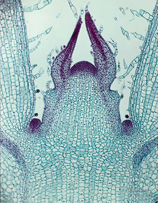
เนื้อเยื่อปลายรากตาเนื้อเยื่อปลายยอด
1.2 เนื้อเยื่อเจริญด้านข้าง (Laterral meristem) : จะพบหลังจากมีการเจริญขั้นที่สอง เป็นเซลล์รูปร่างสี่เหลี่ยมผืนผ้า ผนังเซลล์บาง เรียงตัวเป็นระเบียบ แบ่งเป็น 2 ชนิด
1.2.1 วาสคิวลาร์ แคมเบียม : แทรกอยู่ระหว่าง ไซเลม และโฟลเอ็ม มีหน้าที่ สร้าง secondary xylem และ secondary pholem พบในพืชใบเลี้ยงคู่ทุกชนิด และพืชใบเลี้ยงเดี่ยวบางชนิด
1.2.2 คอร์ก แคมเบียม : ทำหน้าที่สร้างคอร์ก เพื่อทำหน้าที่แทนเซลล์เอพิเดมิส
1.2.3.เนื้อเยื่อเจริญเหนือ ข้อ(Intercalary meristem) : เนื้อเยื่อเจริญชนิดนี้จะอยู่บริเวณเหนือข้อของพืชใบเลี้ยงเดี่ยว ทำให้ปล้องยืดยาวขึ้น ซึ่งมีฮอร์โมนจิบเบอเรลลินเข้ามาเกี่ยวข้อง
2).เนื้อเยื่อถาวร
คือ เนื้อเยื่อพืชซึ่งประกอบด้วยเซลล์ที่แบ่งตัวไม่ได้ และมีรูปร่างคงที่ไม่เปลี่ยนแปลง กล่าวคือ จะคงรูปร่างลักษณะเดิมไว้ตลอดชีวิตของส่วนนั้น ๆ ของพืชเนื้อเยื่อชนิดนี้เจริญเติบโต และเปลี่ยนแปลงมาจากเนื้อเยื่อเจริญเพื่อทำหน้าที่ต่าง ๆ กันจนเซลล์นี้รูปร่างเปลี่ยนแปลงไปจากเดิม มี Vacuole และ cell wall ก็เปลี่ยนแปลงไปสุดแท้แต่ว่า จะกลายไปเป็นเนื้อเยื่อถาวรชนิดไหน ซึ่งโดยมากมักมีสารประกอบต่าง ๆ ไปสะสมบน cell wall ให้หนาขึ้นเพื่อให้เกิดความแข็งแรง
ชนิดของเนื้อเยื่อถาวร เมื่อจำแนกตามลักษณะของเซลล์ที่มาประกอบกันจำแนกได้เป็น 2 ชนิด คือ
2.1 เนื้อเยื่อถาวรเชิงเดี่ยว เป็นเนื้อเยื่อถาวรที่ประกอบด้วย เซลล์ชนิดเดียวกันล้วน ๆ จำแนกออกเป็นหลายชนิด คือ Epidermis Parenchyma Collenchyma Sclerenchyma Coke Secretory tissue
2.2 เนื้อเยื่อถาวรเชิงซ้อน เป็นเนื้อเยื่อถาวรที่ประกอบขึ้นด้วย เซลล์หลายชนิดอยู่รวมกันเป็นกลุ่มก้อน เพื่อทำงานร่วมกัน ประกอบขึ้นด้วย 2 กลุ่มด้วยกันคือ Xylem และ Phloem ซึ่งจะอยู่รวมกันเป็นกลุ่มใหญ่ที่เรียกว่า Vascular bundle หรือ Vascular tissue นั่นเอง
เนื้อเยื่อถาวรเชิงเดี่ยว
Epidermis เป็น simple tissue ที่อยู่ผิวนอกสุดของส่วนต่าง ๆ ของพืช (ถ้าเปรียบกับตัวเรา ก็คือ หนังกำพร้านั่นเอง) เป็นเซลล์ที่มีชีวิต เมื่อโตเต็มที่แล้ว จะมี Vacuole ขนาดใหญ่ จนดัน protoplasm ส่วนอื่น ๆ ให้ร่นไปอยู่ที่ขอบเซลล์หมด
หน้าที่ของ epidermis
– ช่วยป้องกันอันตรายให้แก่เนื้อเยื่อที่อยู่ข้างใน และช่วยเสริมสร้างความแข็งแรงด้วย
– ช่วยป้องกันการระเหย (คาย) น้ำ (เพราะถ้าพืชเสียน้ำไปมากจะเหี่ยว) และช่วยป้องกันน้ำไม่ ให้ซึมเข้าไปข้างในด้วย (เพราะถ้าได้รับน้ำมากเกินไป จะเน่าได้ )
– ช่วยในการแลกเปลี่ยนแก๊สทั้งไอน้ำ คาร์บอนไดออกไซด์ และออกซิเจน โดยทางปากใบ
– ช่วยดูดน้ำและเกลือแร่
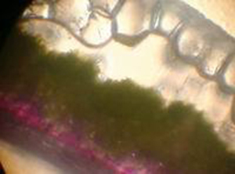
epidermis คือบริเวณกลมๆใสๆด้านบน
Parenchyma เป็น Simple tissue ที่ประกอบด้วย Parenchyma Cell ซึ่งเป็นเซลล์พื้นทั่ว ๆ ไป และพบมากที่สุดในพืชโดยเฉพาะส่วนที่อ่อนนุ่มและอมน้ำได้มาก เช่น ในชั้น Cortex และ Pith ของรากและลำต้น
Parenchyma cell เป็นเซลล์ที่ยังมีชีวิตอยู่ มีรูปร่างหลายแบบ แต่ส่วนใหญ่ทรงกระบอกกลม หรือทรงกระบอกเหลี่ยมด้านเท่า อาจกลมรี มี cell wall บาง ๆ
หน้าที่ Parenchyma
– ช่วยสังเคราะห์แสง
– สะสมอาหาร (พวกแป้ง โปรตีน และไขมัน ) น้ำ
– สร้างน้ำมันที่มีกลิ่นหอมหรืออื่น ๆ ตามแต่ชนิดของพืชนั้น ๆ
– บางส่วนช่วยทำหน้าที่หายใจ
Collenchyma เป็น Simple tissue ที่ประกอบด้วย Collenchyma cell พบมากในบริเวณ Cortex ใต้ epidermis ลงมา ในก้านใบ เส้นกลางใบ เป็นเซลล์ที่ยังมีชีวิตอยู่ เซลล์อัดแน่น ขนาดของเซลล์ส่วนมากเล็ก หน้าตัดมักเป็นรูปสี่เหลี่ยมแต่ยาวมาตาม ความยาวของต้น และปลายทั้งสองเสี้ยมหรือตัดตรง
หน้าที่ของ Collenchyma
– ช่วยทำให้ส่วนต่าง ๆ ของพืชเหนียวและแข็งแรงทรงตัวอยู่ได้
– ช่วยป้องกันแรงเสียดทานด้วย
Sclerenchyma จำแนกออกได้เป็น 2 ชนิดตามรูปร่างของเซลล์ คือ
1). Fiber เรามักเรียกว่าเส้นใย ประกอบด้วยเซลล์ที่ตายแล้ว มีลักษณะเรียวและยาวมากปลายทั้งสองเสี้ยม หรือค่อนข้างแหลม มีความเหนียวและยึดหยุ่นได้มากจะเห็นได้จากเชือกที่ทำจากลำต้นหรือใบของพืช ต่าง ๆ
หน้าที่ของ Fiber
– ช่วยให้ความแข็งแรงแก่พืช
– ช่วยพยุงลำต้นให้ตั้งตรงและแข็งแรง และให้ประโยชน์ต่อเศรษฐกิจของ คนมาก เช่น พวกเชือก เสื้อผ้า ฯลฯ ก็ได้มาจากไฟเบอร์ ของพืชเป็นส่วนใหญ่
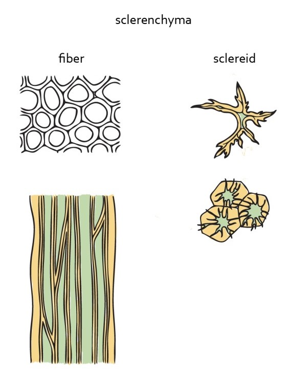
Fiber และ Stone cell (Sclereid)
2). Stone cell ประกอบด้วยเซลล์ที่ตายแล้ว มีลักษณะคล้ายกับไฟเบอร์ แต่เซลล์ไม่ยาวเหมือนไฟเบอร์ เซลล์อาจจะสั้นกว่าและป้อม ๆ อาจกลมหรือเหลี่ยมหรือเป็นท่อนสั้น ๆ รูปร่างไม่แน่นอน พบอยู่มากตามส่วนแข็ง ๆ ของพืช โดยเฉพาะอย่างยิ่งตามเปลือกของเมล็ดหรือผลไม้ เช่น กะลามะพร้าว เมล็ดพุทรา เมล็ดแตงโม หรือ ในเนื้อของผลไม้ที่เนื้อสาก ๆ เช่น เสี้ยนในเนื้อของลูกสาลี่ เนื้อน้อยหน่า ฝรั่ง
หน้าที่ของ Stone cell
– ช่วยให้ความแข็งแรงแก่ส่วนต่าง ๆ ของพืช (เพราะเป็นเซลล์ที่แข็งมาก)
Cork เป็นเนื้อเยื่อชั้นนอกสุด ของลำต้นและรากใหญ่ ๆ ที่แก่แล้ว ของไม้ยืนต้นเซลล์ของคอร์ก มีลักษณะคล้ายพาเรนไคมาเซลล์ แต่ผนังหนากว่ามีทั้ง ไพมารีและเซคันดารี วอลล์ และตามปกติจะไม่มีพิตเลย เนื้อเยื่อคอร์ก มีแต่เซลล์ที่ตายแล้วต้นไม้บางชนิดมีคอร์ก หุ้มหนามาก จนบางทีเราลอกเอามาทำจุกขวดหรือแผ่นไม้คอร์กนั่นเอง คอร์กยังพบที่โคนก้านใบขณะที่ใบกำลังจะร่วง และแผลเป็นตามลำต้น
หน้าที่ของคอร์ก
– ช่วยป้องกันการระเหยของน้ำ ป้องกันความร้อน ความเย็น และอันตรายต่าง ๆ จากภายนอก
โครงสร้างและหน้าที่ของราก
ราก คือ ส่วนหนึ่งที่งอกต่อจากต้นลงไปในดิน ไม่แบ่งข้อและไม่แบ่งปล้อง ไม่มีใบ ตา และดอก หน้าที่ของราก คือ สะสมและดูดซึมอาหารมาบำรุงเลี้ยงต้นพืช นอกจากนี้ยังยึดและค้ำจุนต้นพืช รากของพืชแบ่งออกเป็น 2 ระบบ คือ
1).ระบบรากแก้ว ต้นพืชหลายชนิดเป็นแบบรากแก้ว คือมีรากสำคัญงอกออกจากลำต้นส่วนปลายรูปร่างยาว ใหญ่ เป็นรูปกรวยด้านข้างของราแก้ว จะแตกแขนงออกได้ 2-3 ครั้ง ไปเรื่อย ๆ รากเล็กส่วนปลายจะมีรากฝอยเล็ก ๆ ออกมาเป็นจำนวนมาก เพื่อเพิ่มเนื้อที่ในการดูดซึมอาหารให้กับต้นพืช มักจะพบว่าพืชใบเลี้ยงคู่จะมีรากแบบรากแก้ว ตัวอย่างพืชที่มีลักษณะนี้คือ ขี้เหล็ก คูน มะกา มะหาด เป็นต้น
2). ระบบรากฝอย เป็นรากที่งอกออกจากลำต้นส่วนปลายพร้อมกันหลายๆ ราก ลักษณะ เป็นรากกลมยาวขนาดเท่าๆ กันพบว่าพืชใบเลี้ยงเดี่ยวจะมีรากแบบรากฝอย ตัวอย่างพืชที่มีรากแบบนี้คือ ตะไคร้ หญ้าคา เป็นต้น บางทีรากจะเปลี่ยนลักษณะไป เนื่องจากได้รับอิทธิพล จากสิ่งแวดล้อมภายนอก รากที่เปลี่ยนลักษณะไปนี้มีหลายชนิด เช่น รากสะสมอาหาร รากค้ำจุน รากเกี่ยวพัน รากอากาศ เป็นต้นบางชนิดนี้บางครั้งก็อยู่บนดินจะต้องใช้การสังเกต แต่อย่างไรก็ตาม มันยังคงลักษณะทั่วไปของรากให้เราสังเกตเห็นได้
โครงสร้างของราก
เนื้อเยื่อของรากทั้งพืชใบเลี้ยงคู่และพืชใบเลี้ยงเดี่ยวที่ตัดตามขวาง ตรงบริเวณที่เซลล์เจริญเติบโตเต็มที่ จะพบว่าเนื้อเยื่อของรากแบ่งออกเป็นชั้นๆเรียงจากภายนอกเข้าไปตามลำดับดัง นี้
1). epidermis เป็นเนื้อเยื่อชั้นนอกสุดมีเซลล์ที่เรียงตัวกันเพียงชั้นเดียวและผนังเซลล์บาง ไม่มีคลอโรพลาสต์ บางเซลล์จะเปลี่ยนแปลงไปเป็นขนราก
2). cortex เป็นอาณาเขตระหว่างชั้น epidermis และ stele ประกอบด้วยเนื้อเยื่อพาเรงคิมาที่ทำหน้าที่สะสมน้ำและอาหารเป็นส่วนใหญ่ ชั้นในสุดของ cortex จะเป็นเซลล์แถวเดียวเรียก endodermis ในรากพืชใบเลี้ยงเดี่ยวจะเห็นชัดเจนเซลล์ในชั้นนี้เมื่อมีอายุมากขึ้นจะมี ผนังหนาเพราะมีสารซูเบอริน หรือลิกนินสะสมอยู่ แต่จะมีช่วงที่มีเซลล์ผนังบางแทรกอยู่ในชั้นนี้และอยู่ตรงกับแนวของไซเลม
3). stele เป็นบริเวณที่อยู่ถัดจากชั้น endodermisเข้าไป พบว่าstele ในรากจะแคบกว่าชั้น cortex ประกอบด้วยชั้นต่างๆดังนี้
3.1 pericycle เป็นเซลล์ผนังบางขนาดเล็กมี 1-2 แถว พบเฉพาะในรากเท่านั้น เป็นแหล่งกำเนิดของรากแขนง ( secondary root )
3.2 vascular bundle ประกอบด้วย xylem อยู่ตรงใจกลางเรียงเป็นแฉกโดยมี phloem อยู่ระหว่างแฉก สำหรับพืชใบเลี้ยงคู่ต่อมาจะเกิดเนื้อเยื่อเจริญ vascular cambium คั่นระหว่าง xylem กับ phloem ในรากของพืชใบเลี้ยงคู่มีจำนวนแฉกน้อยประมาณ 1-6 แฉก โดยมากมักมี 4 แฉก ส่วนรากของพืชใบเลี้ยงเดี่ยวมักมีจำนวนแฉกมากกว่า
3.3 pith เป็นบริเวณตรงกลางรากหรือไส้ในของรากเห็นได้ชัดเจนในรากพืชใบเลี้ยงเดี่ยว ส่วนใหญ่เป็นเนื้อเยื่อพาเรงคิมาส่วนรากพืชใบเลี้ยงคู่ตรงกลางมักเป็น xylem
สรุป
♦ ลำดับการจัดเรียงตัวของเนื้อเยื่อของบริเวณเซลล์มีการเปลี่ยนแปลง เรียงจากนอกสุดเข้าในสุด ดังนี้
เอพิเดอร์มิส –> คอร์เทกซ์ –> สตีล –> พิธ
♦ องค์ประกอบของเนื้อเยื่อของราก
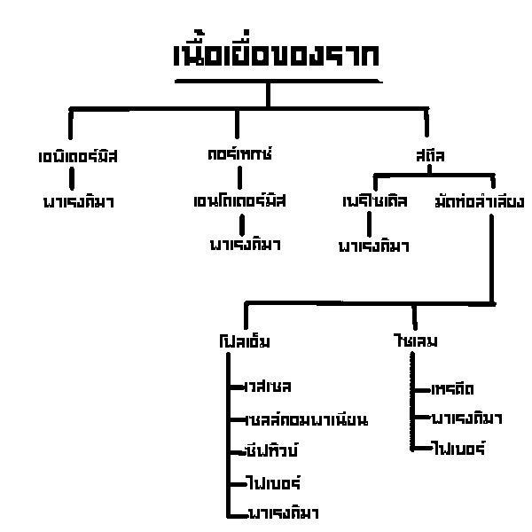
หน้าที่และชนิดของราก
รากมีหน้าที่หลักที่สำคัญ คือ
1). ดูด ( absorption ) น้ำและแร่ธาตุที่ละลายน้ำจากดินเข้าไปในลำต้น
2). ลำเลียง ( conduction ) น้ำและแร่ธาตุรวมทั้งอาหารซึ่งพืชสะสมไว้ในรากขึ้นสู่ส่วนต่างๆของลำต้น
3). ยึด ( anchorage ) ลำต้นให้ติดกับพื้นดิน
4). แหล่งสร้างฮอร์โมน ( producing hormones ) รากเป็นแหล่งสำคัญในการผลิตฮอร์โมนพืชหลายชนิด เช่น ไซโทไคนิน จิบเบอเรลลิน ซึ่งจะถูกลำเลียงไปใช้เพื่อการเจริญพัฒนาของส่วนลำต้น ส่วนยอด และส่วนอื่นๆของพืชนอกจากนี้ยีงมีรากของพืชอีกหลายชนิดที่ทำหน้าที่พิเศษอื่นๆ เช่น สะสมอาหาร สังเคราะห์แสง ค้ำจุน ยึดเกาะ หายใจ เป็นต้น
ชนิดของราก เมื่อจำแนกตามกำเนิดจะจำแนกออกได้เป็น 3 ชนิด คือ
1). primary root เป็นรากที่มีกำเนิดและเจริญเติบโตมาจาก radicle รากชนิดนี้ตอนโคนจะโตแล้วค่อยๆเรียวเล็กลงเรื่อยๆจนถึงปลายซึ่งก็คือ รากแก้ว ( tap root )นั่นเอง
2). secondary root เป็นรากที่มีกำเนิดและเจริญเติบโตออกมาจาก primary root อีกทีหนึ่ง เป็นรากที่เรียกกันทั่วๆไปว่า รากแขนง ( lateral root ) และแขนงต่างๆที่แยกออกไปเป็นทอดๆนั้นต่างมีกำเนิดมาจากเนื้อเยื่อ pericycleในรากเดิมทั้งสิ้น
3). adventitious root รากพิเศษ หรือ รากวิสามัญ เป็นรากที่ไม่ได้มีกำเนิดมาจาก radicle และก็ไม่เป็นแขนงของprimary root จำแนกเป็นชนิดย่อยๆลงไปอีกตามรูปร่างและหน้าที่ของมัน คือ
3.1 รากฝอย ( fibrous root ) เป็นรากเส้นเล็กๆมากมายขนาดสม่ำเสมอตลอดความยาวของราก งอกออกจากรอบๆโคนต้นแทนรากแก้วที่ฝ่อไป พบในพืชใบเลี้ยงเดี่ยวเป็นส่ใหญ่ เช่น ข้าว ข้าวโพด หญ้า หมาก มะพร้าว ตาล กระชายพบในพืชใบเลี้ยงคู่บางชนิด เช่น รากต้อยติ่ง มันเทศ มันแกว
3.2 รากค้ำจุน ( prop root ) เป็นรากที่แตกออกจากข้อของลำต้นที่อยู่ใต้ดินและเหนือดินเล็กน้อย แล้วพุ่งทะแยงลงไปในดินเพื่อช่วยพยุงและค้ำจุนลำต้น ได้แก่ รากเตย ลำเจียก ข้าวโพด ยางอินเดีย โกงกาง และไทรย้อย เป็นต้น
3.3 รากสังเคราะห์แสง ( photosynthetic root ) เป็นรากที่แตกออกจากข้อของลำต้นหรือกิ่งแล้วห้อยลงมาในอากาศ มีสีเขียวของคลอโรฟิลล์จึงสังเคราะห์แสงได้ ได้แก่ รากกล้วยไม้ ไทร โกงกาง ซึ่งจะมีสีเขียวเฉพาะตรงที่ห้อยอยู่ในอากาศเท่านั้น รากกล้วยไม้นอกจากจะมีสีเขียวและช่วยในการสังเคราะห์แสงแล้ว พบว่ามีเยื่อพิเศษลักษณะนุ่มคล้ายฟองน้ำ เป็นเซลล์พวกพาเรงคิมาเรียงตัวกันอย่างหลวมๆ โดยมีช่องว่างระหว่างเซลล์มากเรียก นวม ( velamen ) หุ้มอยู่ตามขอบนอกของรากช่วยดูดน้ำ รักษาความชื้นให้แก่ราก ตลอดทั้งช่วยในการหายใจด้วย
3.4 รากหายใจ ( respiratory root or aerating root ) เป็นรากที่ชูปลายรากขึ้นมาเหนือพื้นดินบางทีก็ลอยตามผิวน้ำ เพื่อช่วยในการหายใจได้มากเป็นพิเศษกว่ารากปกติทั่วๆไป ทั้งนี้เพราะโครงสร้างของรากประกอบด้วยเซลล์พาเรงคิมาซึ่งเรียงตัวอย่าง หลวมๆ มีช่องว่างระหว่างเซลล์มาก ทำให้อากาศผ่านเข้าสู่เซลล์ชั้นในของรากได้ง่าย รากเหล่านี้อาจเรียกว่า รากทุ่นลอย ( pneumatophore ) ได้แก่ ลำพู แสม โกงกาง แพงพวยน้ำ และผักกระเฉด เป็นต้น
3.5 รากเกาะ ( climbing root ) เป็นรากที่แตกออกมาจากส่วนข้อของลำต้น แล้วเกาะติดกับสิ่งยึดเกาะ เช่นเสาหรือหลักเพื่อพยุงลำต้นให้ติดแน่นและชูส่วนของลำต้นให้สูงขึ้นไป และให้ส่วนต่างๆของพืชได้รับแสงมากขึ้น ได้แก่ พลูพลูด่าง พริกไทย และกล้วยไม้ เป็นต้น
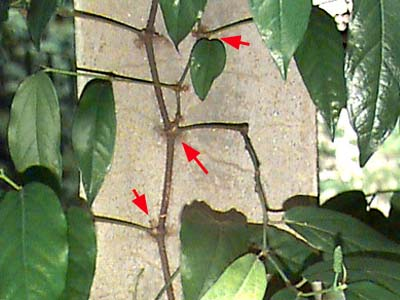
รากเกาะ (ต้นพริกไทย)
โครงสร้างและหน้าที่ของลำต้น
ลักษณะทั่วไปของลำต้น
ลำต้น (stem) เป็นอวัยวะของพืชซึ่งส่วนใหญ่จะเจริญขึ้นมาเหนือดินแต่ก็มีพืชบางชนิดที่ลำ ต้นอยู่ใต้ดิน ลำต้นประกอบด้วยส่วนสำคัญ 2 ส่วนคือ
1). ข้อ (node) เป็นส่วนของลำต้นที่มีตา (bud) ซึ่งจะเจริญไปเป็นกิ่ง ดอก หรือใบ
2). ปล้อง (internode) เป็นส่วนของลำต้นที่อยู่ระหว่างข้อ
พืชใบเลี้ยงเดี่ยวจะสังเกตส่วนของข้อปล้องได้อย่างชัดเจนตลอดชีวิต เช่น ต้นไผ่ ต้นอ้อย ข้าวโพด เป็นต้น ส่วนพืชใบเลี้ยงคู่นั้นส่วนใหญ่แล้วข้อปล้องจะสังเกตได้ไม่ชัดเจนทั้งนี้ เพราะเมื่อเจริญเติบโตเต็มที่แล้วมักจะมีเนื้อเยื่อชั้นคอร์ก(cork) มาหุ้มโดยรอบเอาไว้ การจะสังเกตอาจจะสังเกตในขณะที่พืชยังอ่อนอยู่ แต่ก็ยังมีพืชใบเลี้ยงคู่บางชนิดที่สามารถสังเกตเห็นข้อปล้องได้อย่างชัดเจน ตลอดชีวิตเหมือนพืชใบเลี้ยงเดี่ยว ได้แก่พวกไม้ล้มลุกต่างๆ เช่น ต้นตำลึง ฟักทอง และผักบุ้ง เป็นต้น
โครงสร้างของลำต้น
โครงสร้างภายในของปลายยอดพืช บริเวณปลายยอดพืชสามารถแบ่งออกเป็นบริเวณ (region/zone) ได้ทั้งหมด 3 บริเวณด้วยกันคือ
1) บริเวณเซลล์แบ่งตัว (region of cell division)
2) บริเวณเซลล์ยืดตัว (region of cell elongation)
3) บริเวณเซลล์เจริญเต็มที่ (region of maturation)
โครงสร้างภายในของลำต้นที่ตัดตามขวาง
เมื่อนำปลายยอดของพืชมาตัดตามขวางบริเวณเซลล์เจริญเต็มที่จะพบว่าโครงสร้าง ภายในประกอบด้วยเนื้อเยื่อชนิดต่างๆตามแต่ชนิดของพืชโดยแบ่งได้ดังนี้
1).โครงสร้างภายในของลำต้นพืชใบเลี้ยงคู่
epidermis
เป็นเนื้อเยื่อที่อยู่ชั้นนอกสุด ทำหน้าที่ป้องกันอันตรายให้แก่เนื้อเยื่อภายในของลำต้น ส่วนใหญ่เซลล์เรียงตัวเพียงชั้นเดียว พืชบางชนิด epidermis มีการเปลี่ยนแปลงไปเป็นส่วนของ trichome / hair และ guard cell
ในต้นพืชที่อายุมากส่วนใหญ่แล้วส่วนของ epidermis จะหลุดหายไปเพราะถูกแทนที่ด้วยส่วนของคอร์ก
cortex (คอร์เทกซ์)
คอร์เทกซ์เป็นชั้นของลำต้นที่มีอาณาเขตตั้งแต่ใต้ epidermis เข้ามาจนถึงเนื้อเยื่อเอนโดเดอมิส (endodermis) ดังนั้นในชั้นคอร์เทกซ์จึงประกอบด้วยเนื้อเยื่อชนิดต่างๆได้แก่
| ชนิด |
รายละเอียด และ หน้าที่ |
| parenchyma |
เป็นเนื้อเยื่อส่วนใหญ่ที่พบภายในลำต้น |
| chlorenchyma |
ทำหน้าที่ช่วยในกระบวนการสังเคราะห์ด้วยแสง |
| aerenchyma |
ทำหน้าที่เกี่ยวข้องกับการสะสมอากาศ โดยเฉพาะพืชน้ำ |
| collenchyma |
เพิ่มความแข็งแรงให้แก่ลำต้น |
| sclerenchyma(fiber) |
ให้ความแข็งแรงแก่ลำต้น |
stele (สตีล)
สตีลเป็นชั้นที่ถัดเข้ามาจากชั้นคอร์เทกซ์ โดยมีอาณาเขตตั้งแต่ใต้ endodermis เข้ามาจนถึงใจกลางของลำต้น แต่เนื่องจากในลำต้นเนื้อเยื่อ endodermis ส่วนใหญ่เห็นได้ไม่ชัดเจนหรือหนังสือบางเล่มก็กล่าวว่าในลำต้นจะไม่มีเนื้อ เยื่อ endodermis ทำให้ชั้นสตีลในลำต้นแบ่งแยกออกจากชั้นคอร์เทกซ์ได้ไม่ชัดเจนเหมือนในส่วน ของรากพืช ภายในชั้นสตีลจะประกอบด้วยเนื้อเยื่อที่สำคัญคือ
vascular bundle หมายถึงกลุ่มของเนื้อเยื่อที่ทำหน้าที่เกี่ยวข้องกับการลำเลียง
ภายในเนื้อเยื่อ vascular bundle ของพืชใบเลี้ยงคู่ประกอบด้วย กลุ่มเนื้อเยื่อลำเลียงอาหาร (phloem) เรียงตัวอยู่ทางด้านนอกและกลุ่มเนื้อ เยื่อลำเลียงน้ำ (xylem) เรียงตัวอยู่ทางด้านในหรือด้านที่ติดกับ pith ระหว่าง xylem กับ phloem จะมีเนื้อเยื่อเจริญที่เรียกว่า vascular cambium คั่นกลางอยู่ทำหน้าที่แบ่งเซลล์เพื่อให้กำเนิด xylem และ phloem
pith เป็นเนื้อเยื่อที่อยู่ส่วนกลางของลำต้น ส่วนใหญ่เป็นเนื้อเยื่อประเภท
parenchyma จึงทำหน้าที่ในการสะสมสารต่างๆ ลำต้นของพืชใบเลี้ยงคู่บางชนิดเนื้อเยื่อในส่วนนี้อาจสลายไปกลายเป็น ช่องกลวงกลางลำต้น เรียกช่องนี้ว่า pith cavity
โครงสร้างภายในของลำต้นพืชใบเลี้ยงเดี่ยว
epidermis
เป็นเนื้อเยื่อที่อยู่ชั้นนอกสุด ทำหน้าที่ป้องกันอันตรายให้แก่เนื้อเยื่อภาย ในของลำต้น ส่วนใหญ่เซลล์เรียงตัวเพียงชั้นเดียวและมีอยู่ตลอดไป ยกเว้นใน ต้นพืชตระกูลปาล์มจะมีเฉพาะในปีแรกเท่านั้นเพราะต่อมาจะมีเนื้อเยื่อคอร์ก (cork) มาแทน
cortex
มีเนื้อเยื่อบางๆ1-2 ชั้น ส่วนใหญ่เป็นเนื้อเยื่อชนิด parenchyma และส่วนใหญ่ไม่พบ endodermis ทำให้อาณาเขตแบ่งได้ไม่ชัดเจน
vascular bundle
กลุ่มของเนื้อเยื่อลำเลียงของพืชใบเลี้ยงเดี่ยว ส่วนของ xylem, phloem จะเรียงตัวกันมองคล้ายๆใบหน้าคน มีส่วนของ vessel อยู่บริเวณคล้ายดวงตา ส่วน phloem อยู่บริเวณคล้ายหน้าผาก xylem และ phloem จะถูกล้อมรอบด้วยเนื้อเยื่อ parenchyma หรืออาจเป็น sclerenchyma และเรียกเซลล์ที่มาล้อมรอบนี้ว่า bundle sheath vascular bundle ของพืชใบเลี้ยงเดี่ยวส่วนใหญ่ไม่พบเนื้อเยื่อเจริญ vascular cambium ยกเว้นหมากผู้หมากเมีย และพืชตระกูลปาล์ม
pith
เป็นเนื้อเยื่อที่อยู่ส่วนกลางของลำต้น ส่วนใหญ่เป็นเนื้อเยื่อประเภท parenchyma พืชใบเลี้ยงเดี่ยวบางชนิด เช่น ข้าวโพด ในเนื้อเยื่อของ pith นี้จะพบ vascular bundle กระจายอยู่เต็ม นอกจากนี้พืชบางชนิดเนื้อเยื่อในส่วนนี้อาจสลายไปกลายเป็นช่องกลวงกลางลำ ต้น เรียกว่า pith cavity เช่นต้นไผ่ ต้นข้าวเป็นต้น
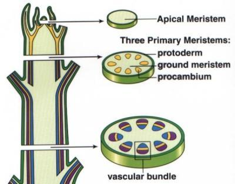
โครงสร้างภายในของลำต้นพืชใบเลี้ยงเดี่ยว สามารถจำแนกลำต้นออกเป็น 2 ชนิดคือ
ลำต้นเหนือดิน (aerial stem/terrestrial stem)
creeping stem คือลำต้นที่ทอดหรือเลื้อยขนานไปตามผิวดินหรือผิวน้ำ เช่น ผักบุ้ง ผักกระเฉด ฟักทอง สตรอเบอรี่ และหญ้า เป็นต้น
climbing stem คือลำต้นที่ไต่ขึ้นที่สูงโดยวิธีใดวิธีหนึ่ง ถ้ามีหลักหรือต้นไม้ที่ลำต้นตั้งตรงอยู่ใกล้ๆจะถูกใช้ไต่ขึ้นไป แบ่งออกเป็น
twining stem ลำต้นไต่ขึ้นที่สูงโดยใช้ลำต้นพันกับหลักเป็นเกลียว เช่น เถาวัลย์ ต้นถั่ว บอระเพ็ด ฝอยทอง เป็นต้น
stem tendril ลำต้นไต่ขึ้นที่สูงโดยใช้ส่วนของลำต้นดัดแปลงไปเป็นมือเกาะ (tendril) เพื่อพันหรือไต่ขึ้นที่สูง ส่วนของ tendril จะบิดเป็นเกลียวคล้ายสปริงเพื่อให้ยืดหยุ่น เช่น ต้นองุ่น บวบ แตงกวา กระทกรก โคกกระออม พวงชมพู เป็นต้น
root climber ลำต้นไต่ขึ้นที่สูงโดยใช้รากซึ่งออกมาตามข้อ ยึดหลักหรือต้นไม้ เช่น ต้นพริกไทย พลู และพลูด่าง เป็นต้น
stem spine / stem thorn ลำต้นที่ดัดแปลงไปเป็นหนามหรือขอเกี่ยว (hook) เพื่อไต่ขึ้นที่สูง เช่น ต้นเฟื้องฟ้า ไผ่ ไมยราบ และพืชตระกูลส้ม เป็นต้น
cladophyll / phylloclade / cladode คือลำต้นที่เปลี่ยนแปลงไปมีลักษณะหรือหน้าที่คล้ายใบ เช่น ลำต้นแป็นแผ่นแบน หรือมีสีเขียวของคลอโรฟีลล์ ได้แก่ กระบองเพชร พญาไร้ใบ หน่อไม้ฝรั่ง โปร่งฟ้า เป็นต้น
bulbil / crown / slip คือลำต้นที่เป็นตาหรือหน่อเล็กๆ สั้นๆ ที่ประกอบด้วยยอดอ่อนและใบเล็กๆ 2-3 ใบ แตกออกระหว่างซอกใบกับลำต้น หรือแตกออกจากยอดของลำต้นแทนดอก เมื่อมันหลุดร่วงลงดินก็สามารถเจริญเป็นต้นใหม่ได้ เช่น หอม กระเทียม สับปะรด เป็นต้น
ลำต้นใต้ดิน (underground stem)
rhizome คือลำ ต้นใต้ดินที่เรียกกันว่า แง่ง หรือเหง้า ส่วนใหญ่ขนานกับพื้นดิน มีข้อปล้องเห็นได้ชัดเจน ตามข้อมีใบที่เป็นแปลงเป็นสีน้ำตาล ได้แก่ ขิง ข่า ขมิ้น บางชนิดอาจตั้งตรง เช่น กล้วย พุทธรักษา เป็นต้น
tuber ลำต้นใต้ดินที่สะสมอาหาร ทำให้อวบอ้วน แต่บริเวณที่เป็นตาจะไม่อ้วนออกมาด้วยทำให้เห็นเป็นรอยบุ๋ม ได้แก่ มันฝรั่ง เป็นต้น
bulb ลำต้นใต้ดินที่ลำต้นเล็กมีปล้องสั้นมาก ตามปล้องมีใบเกล็ดซ้อนกันหลายๆชั้น ห่อหุ้มลำต้นเอาไว้และสะสมอาหาร เช่น หอม กระเทียม เป็นต้น
corm เป็นลำต้นใต้ดินที่ตั้งตรงเช่นเดียวกับ bulb มีลักษณะคล้ายกันแต่เก็บสะสมอาหารไว้ในลำต้นจนทำให้เห็นลำต้นอวบอ้วน ตามข้อมีใบเกล็ดบางๆหุ้ม มีตางอกตามข้อ เช่น เผือก แห้วจีน เป็นต้น
วงปี
ในรอบ 1 ปี วาสคิวลาร์แคมเบียมของพืชที่มีเนื้อไม้จะมีการแบ่งเซลล์สร้างไซเลมและโฟล เอ็มขั้นที่ 2 จำนวนมากน้อยต่างกันในแต่ละฤดูขึ้นอยู่กับปริมาณน้ำและธาตุอาหาร
ในฤดูที่สิ่งแวดล้อมอุดมสมบูรณ์ดี เช่น ฤดูฝน เซลล์ชั้นไซเลมจะเจริญเร็วมีขนาดใหญ่ทำให้ได้ชั้นไซเลมกว้าง และมีสีจาง
ในฤดูแล้ง เซลล์ชั้นในไซเลมจะเจริญช้ามีขนาดเล็กเบียดกันแน่นทำให้เห็นแถบแคบๆและมีสีเข้ม
ลักษณะดังกล่าวทำให้เห็นเนื้อไม้มีสีจางและเข้มสลับกันมองเห็นเป็นวงเรียกว่า วงปี
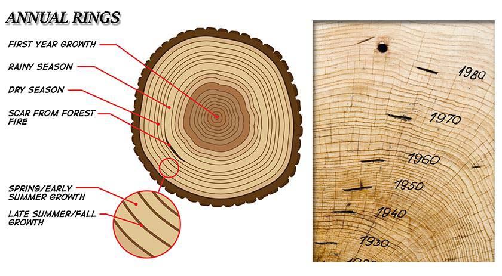
โครงสร้างของใบ
ใบถือว่าเป็นองค์ประกอบที่สำคัย ต่อพืชเป็นอย่างยิ่งเพราะพลังงานที่ได้มานั้นต้องอาศัการสังเคราะห์แสงซึ่ง เกือบทั้งหมดจะเกิดขึ้นที่ใบของพืช
โครงสร้างภายนอกของใบ
ใบของพืชส่วนใหญ่ประกอบด้วยส่วนแบนๆ ที่แผ่ขยายออกไปเรียกว่า แผ่นใบ (blade) และมีก้านใบ(petiole) เชื่อมติดอยู่กับลำต้นหรือกิ่งทางด้านข้าง และอาจมีหูใบ (stipule) ที่โคนก้านใบ การที่ใบพืชมีลักษณะแบนมีประโยชน์ช่วยเพิ่มพื้นที่ผิวในการรับแสงเพื่อให้ ได้พลังงานไปใช้ในการตรึงคาร์บอนไดออกไซด์ และช่วยในการระบายความร้อน โดยทั่วๆไปใบของพืชมีสีเขียวเนื่องจากคลอโรฟิลล์ซึ่งเป็นสารรับสีที่รับ พลังงานแสง แต่ใบบางชนิดมีสีแดงหรือม่วง เป็นเพราะภายในใบมีการสร้างสารสีอื่นๆ เช่น แอนโทไซยานิน (anthocyanin) แคโรทีนอยด์ (carotenoid) ซึ่งถ้ามีมากกว่าคลอโรฟิลล์จะทำให้ใบมีสีแดงหรือเหลือง
ในพืชใบเลี้ยงคู่จะมีเส้นใบ (vein) แตกแขนงออกมาจากเส้นกลางใบ (midrib) เพื่อให้การลำเลียงสารต่างๆ จากท่อลำเลียงไปสู่ทุกๆ เซลล์ของใบได้ทั่วถึง ก้านใบของพืชใบเลี้ยงเดี่ยวอาจเป็นกาบที่มีเส้นใบขนาดใหญ่เรียงขนานกันจนถึง ปลายใบ พืชบางชนิดเส้นใบย่อยแตกแขนงตั้งฉากกับเส้นใบใหญ่ เช่น ใบกล้วย และเส้นใบย่อยก็ยังเรียงขนานกันเองอีกด้วย
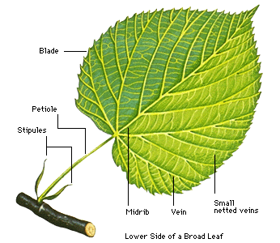
โครงสร้างภายในของใบ ประกอบด้วยเนื้อเยื่อต่างๆ เช่นเดียวกับลำต้น
1). เอพิเดอร์มิส เป็นเนื้อเยื่อผิว มีทั้งด้านบนและด้านล่าง ประกอบด้วยเซลล์เพียงชั้นเดียวหรือหลายชั้น ได้แก่ เซลล์ผิว เซลล์ขน หรือเปลี่ยนไปเป็นเซลล์คุม (guard cell) ภายในเซลล์ผิวมักไม่ค่อยมีคลอโรพลาสต์หรือมีน้อยยกเว้นเซลล์คุม เซลล์ผิวมีคิวทินเคลือบอยู่ที่ผนังเซลล์ด้านนอกเพื่อป้องกันการระเหยของน้ำ ออกจากใบ เซลล์คุมมีรูปร่างคล้ายไตหรือเมล็ดถั่ว 2 เซลล์ประกบกัน พืชที่ใบลอยปริ่มน้ำ เช่น บัวสาย จะมีปากใบ (stoma) อยู่เฉพาะทางด้านบนของใบเท่านั้น ส่วนพืชที่จมอยู่ใต้ผิวน้ำ เช่น สาหร่ายหางกระรอกจะไม่มีปากใบและไม่มีคิวทินฉาบผิว ใบพืชบางชนิดมีปากใบทั้งด้านบนและด้านล่าง เช่น ใบข้าวโพด
2). มีโซฟิลล์ (mesophyll) เป็นเนื้อเยื่อที่อยู่ระหว่างชั้นเอพิเดอร์มิสทั้ง 2 ด้าน ส่วนใหญ่เป็นเนื้อเยื่อพาเรงคิมาที่มีคลอโรพลาสต์จำนวนมาก โดยทั่วไปพาเรงคิมาในพืชใบเลี้ยงคู่จะมีเซลล์ 2 แบบ ทำให้โครงสร้างภายในแบ่งเป็น2 ชั้นคือ
2.1 แพลิเซดมีโซฟิลล์ (palisade mesophyll) มักพบอยู่ใต้ชั้นเอพิเดอร์มิสด้านบน ประกอบด้วยเซลล์รูปร่างยาว เรียงตัวเป็นแถวตั้งฉากกับผิวใบคล้ายรั้วอาจมีแถวเดียวหรือหลายแถว ภายในเซลล์มีคลอโรพลาสต์ค่อนข้างหนาแน่นมาก
2.2 สปันจีมีโซฟิลล์ (spongy mesophyll) อยู่ถัดจากแพลิเซดมีโซฟิลล์ลงมาจนถึงชั้นเอพิเดอร์มิสด้านล่าง ประกอบด้วยเซลล์ที่มีรูปร่างไม่แน่นอนเรียงตัวในทิศทางต่างๆ กัน ทำให้เกิดช่องว่างระหว่างเซลล์มาก ภายในเซลล์มีคลอโรพลาสต์หนาแน่นแต่น้อยกว่าแพลิเซดมีโซฟิลล์
2.3 มัดท่อลำเลียง ประกอบด้วยไซเลมและโฟลเอ็ม โดยไซเลมและโฟลเอ็มจะเรียงติดต่อถึงกันอยู่ในเส้นใบ พืชบางชนิดมัดท่อลำเลียงจะล้อมรอบด้วยบันเดิลชีท (bundle sheath) เช่น ใบข้าวโพด บันเดิลชีทในพืชบางชนิดมีเนื้อเยื่อไฟเบอร์ช่วยทำให้มัดท่อลำเลียงแข็งแรง เร็วขึ้น ในพืชบางชนิดมีเนื้อเยื่อพาเรงคิมา ซึ่งจะมีคลอโรพลาสต์หรือไม่มีก็ได้ขึ้นอยู่กับชนิดของพืช มัดท่อลำเลียงส่วนใหญ่จะอยู่ในชั้นสปันจีมีโซฟิลล์
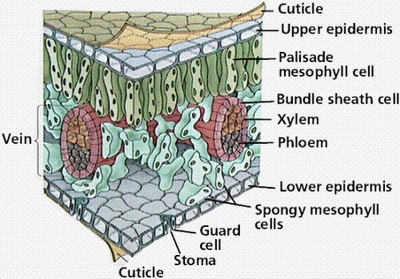
หน้าที่ของใบ
ใบมีหน้าที่สร้างอาหาร เรียกว่า “การสังเคราะห์ด้วยแสง” (สามารถศึกษาเพิ่มเติมได้จากบทเรียนเรื่อง การสังเคราะห์ด้วยแสง) นอกจากนี้ยัง ทำหน้าที่คายน้ำทางปากใบอีกด้วย นอกจากนี้ใบของพืชบางชนิดยังทำหน้าที่อย่างอื่นอีก เช่น ใบตำลึง มะระ และถั่วลันเตา ทำหน้าที่ยึดและพยุงลำต้นให้ไต่ขึ้นที่สูงได้ ใบกระบองเพชรจะเปลี่ยนเป็นหนามแหลม เพื่อลดการคายน้ำของใบ เนื่อง จากกระบองเพชรดำรงชีวิตอยู่ในที่แห้งแล้ง ไม่มีน้ำใบหม้อข้าวหม้อแกงลิงทำหน้าที่จับแมลงเป็นอาหาร ใบว่านหวงจระเข้ กลีบของกระเทียม และหัวหอม ทำหน้าที่สะสมอาหาร
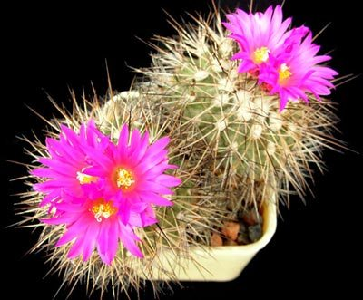
การคายน้ำของพืช
การคายน้ำของพืชปากใบพืชจำแนกตามชนิดของพืชที่เจริญอยู่ในสิ่งแวดล้อมต่าง ๆ ได้เป็น 3 แบบ คือ
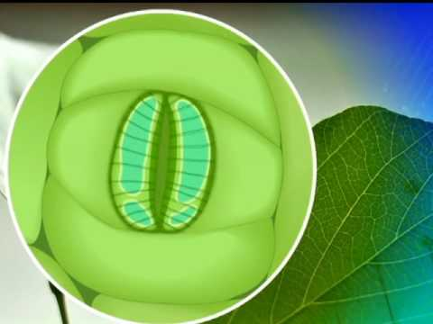
1).ปากใบแบบธรรมดา (typical stomata) เป็นปากใบของพืชทั่วไปโดยมีเซลล์คุมอยู่ในระดับเดียวกับเซลล์เอพิเดอร์มิส พืชที่ปากใบเป็นแบบนี้เป็นพวกเจริญอยู่ในที่ ๆ มีน้ำอุดมสมบูรณ์พอสมควร (mesophyte)
2).ปากใบแบบจม (sunken stomata) เป็นปากใบที่อยู่ลึกเข้าไปในเนื้อใบเซลล์คุมอยู่ลึกกว่าหรือต่ำกว่าชั้น เซลล์เอพิเดอร์มิสพบในพืชที่อยู่ในที่แห้งแล้ง (xerophyte) เช่น พืชทะเลทราย พวกกระบองเพชร พืชป่าชายเลน (halophyte) เช่น โกงกาง แสม ลำพู เป็นต้น
3).ปากใบแบบยกสูง (raised stomata) เป็นปากใบที่มีเซลล์คุมอยู่สูงกว่าระดับเอพิเดอร์มิสทั่วไป เพื่อช่วยให้น้ำระเหยออกจากปากใบได้เร็วขึ้นพบได้ในพืชที่เจริญอยู่ในน้ำที่ ที่มีน้ำมากหรือชื้นแฉะ(hydrophyte)
ใบพืชใบเลี้ยงเดี่ยวบางชนิด เช่น หญ้า ข้าวโพด ที่ชั้นเอพิเดอร์มิสมีเซลล์ขนาดใหญ่และผนังเซลล์บาง เรียกว่า บัลลิฟอร์มเซลล์ (bulliform cell) ช่วยทำให้ใบม้วนงอได้เมื่อพืชขาดน้ำช่วยลดการคายน้ำของพืชให้น้อยลง พืชบางชนิดอาจมีเอพิเดอร์มิสหนามากกว่า 1 ชั้น ซึ่งพบมากทางด้านหลังใบมากกว่าทางด้านท้องใบเรียกว่า มัลติเปิล เอพิเดอร์มิส (multiple epidermis) ซึ่งพบในพืชที่แห้งแล้งช่วยลดการของได้ เซลล์ชั้นนอกสุดเรียกว่า เอพิเดอร์มิส ส่วนเซลล์แถวที่อยู่ถัดเข้าไปเรียกว่า ไฮโพเดอร์มิส (hypodermis)
ประเภทของการคายน้ำ
การคายน้ำของพืชเป็นไปในลักษณะของการแพร่เป็นส่วนใหญ่ แบ่งเป็น 3 ประเภท ตามตำแหน่งที่ไอน้ำออกมา คือ
1).Stomatal transpiration เป็นการคายน้ำที่กำจัดไอน้ำออกมาทางปากใบซึ่งมีอยู่มากมายตามผิวใบ ปากนี้เป็นทางที่มีการคายน้ำออกมากที่สุด
2).Cuticular transpiration เป็นการคายน้ำที่กำจัดไอน้ำออกมาทางผิวใบที่มี cuticle ฉาบอยู่ข้างนอกสุดของ epidermis แต่เนื่องจาก cuticle ประกอบด้วยสาร cutin ซึ่งเป็นสารประกอบคล้ายขี้ผึ้ง ไปน้ำจึงแพร่ออกทางนี้ได้ยาก ดังนี้ พืช จึงคายน้ำออกทางนี้ได้น้อยและ ถ้าหากพืชใดมี cuticle หนามากน้ำก็ยิ่งออกได้ยากมากขึ้นทั้ง stomatal และcuticular transpiration ต่างก็เป็นการคายน้ำที่กำจัดไอน้ำออกมาจากใบ จึงเรียกการคายน้ำทั้ง 2 ประเภทนี้รวม ๆ กันว่า Foliar transpiration การคายน้ำออกจากใบดังกล่าวนี้จะเกิดที่ปากใบประมาณ 90 เปอร์เซ็นต์และที่ cuticle ประมาณ 10 เปอร์เซ็นต์
3).Lenticular transpiration เป็นการคายน้ำที่กำจัดไอน้ำออกมาทาง lenticel ซึ่งเป็นรอยแตกตามลำต้นและกิ่ง การคายน้ำประเภทนี้เกิดขึ้นน้อยมาก เพราะ lenticel มีในพืชเป็นส่วนน้อยและเซลล์ของ lenticel ก็เป็น cork cell ด้วยไอน้ำจึงออกมาได้น้อย
การคายน้ำในรูปหยดน้ำ เป็นการคายน้ำในรูปหยดน้ำเล็ก ๆ ทางรูเปิดเล็ก ๆ ตามปลายเส้นใบที่ขอบใบที่เรียกว่า โฮดาโธด (hydathode) การคายน้ำนี้เรียกว่า กัตเตชัน (guttation)ซึ่งเกิดขึ้นเมื่ออากาศมีความชื้นมากๆอุณหภูมิต่ำและลมสงบ
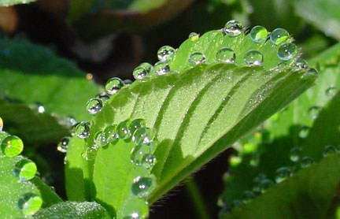
ปัจจัยในการควบคุมการคายน้ำ
ใบไม้จะคายน้ำได้ช้าหรือเร็ว มากหรือน้อย ย่อมขึ้นอยู่กับสภาพแวดล้อมภายนอกและสภาพภายในของพืชเอง คือ
1).แสงสว่าง ถ้าความเข้มข้นของแสงสว่างมากจะช่วยให้การคายน้ำมีอัตราสูงขึ้น
2).อุณหภูมิ ถ้าอุณหภูมิของบรรยากาศสูง จะทำให้ใบคายน้ำได้มากและรวดเร็วขึ้น ทั้งนี้เพราะว่า
2.1 เมื่ออุณหภูมิสูง อุณหภูมิของน้ำในใบก็จะสูงขึ้น ทำให้น้ำระเหยเป็นไอได้ง่ายและเร็วขึ้น จึงระเหยออกไปจากใบได้มากและเร็วขึ้นด้วย
2.2 เมื่ออุณหภูมิต่ำ อากาศภายนอกสามารถอุ้มไอน้ำเอาไว้ได้มากขึ้น ปากใบเปิดได้ดีที่อุณหภูมิ 25 – 30 องศาเซลเซียส
3).ความชื้น ถ้าหากความชื้นในบรรยากาศมีน้อย คือ อากาศ ความชื้นในบรรยากาศจึงแตกต่างกับความชื้นในช่องว่างที่อากาศในใบมาก ทำให้การคายน้ำเกิดขึ้นได้มากและรวดเร็ว อากาศชื้น ใบจะคายน้ำได้น้อยและช้าลง ตามทฤษฎีถ้าความชื้นอิ่มตัวใบไม่ควรจะคายน้ำเลย ซึ่งก็เป็นความจริง กล่าวคือ ใบจะไม่คายน้ำออกมาเป็นไอน้ำ แต่มันคายมาเป็นหยดน้ำอย่างหนึ่งที่เรียกว่า Guttation นั่นเอง
4).ลม โดยที่ลมช่วยพัดพาไอน้ำที่ระเหยออกมาจากใบและอยู่บริเวณรอบ ๆ ใบให้พ้นไปจากผิว บริเวณนั้นจึงมีไอน้ำน้อยหรือมีอากาศแห้งเข้ามาแทนที่ ก็สามารถรับไอน้ำจากใบได้อีก
5).ความอุดมสมบูรณ์ของน้ำในดิน ถ้าในดินมีน้ำมากหรือดินแฉะ และสภาพอื่น ๆ ก็เหมาะสมกับการคายน้ำ น้ำในดินจะถูกดูดและลำเลียงไปยังใบได้มากและตลอดเวลาก็จะทำให้ใบคายน้ำได้ มาก แต่ถ้าน้ำในดินน้อยหรือดินแห้ง แม้ว่าสภาพอื่น ๆ จะเหมาะสมกับการคายน้ำมาก อย่างไรก็ตามการคายน้ำก็เกิดขึ้นได้น้อย เพราะเมื่อดินแห้งก็ไม่มีน้ำที่จะลำเลียงขึ้นไปยังใบ ใบจึงขาดน้ำที่จะระเหยออกไปได้ อนึ่ง สภาพอื่น ๆ ที่เหมาะสมแก่การคายน้ำที่กล่าวถังนั้น ได้แก่ ความสามารถของรากในการดูดน้ำจากดิน อุณหภูมิของดิน ความเข้มข้นของสารละลายในดิน เป็นต้น
6).ความกดดันของบรรยากาศ ในที่ที่มีความกดดันของบรรยากาศต่ำ อากาศจะบางลงและความแน่นน้อย เป็นโอกาสให้ไอน้ำแพร่ออกไปจากใบได้ง่าย อัตราของการคายน้ำก็สูง แต่ถ้าความดันของบรรยากาศสูง ใบก็จะคายน้ำได้น้อยลง
7).ลักษณะและโครงสร้างของใบ
การลำเลียงในพืชดอก
การลำเลียงสารอาหารของพืช (Translocation of Solute )
ส่วนของพืชที่เป็นจำนวนมากที่ไม่มีคลอโรฟิลล์ จึงจำเป็นต้องอาศัยอาหารที่สังเคราะห์ขึ้นจากส่วนอื่นที่ไม่ใช่คลอโรฟิลล์ ดังนั้นสารการเคลื่อนย้ายสารจากส่วนหนึ่งไปอีกส่วนหนึ่งของพืช เรียกว่า translocation of solute พืชที่ จึงต้องมีการลำเลียงตัวถูกละลายหรืออาหารที่ละลายได้จากแหล่งเก็บ (ใบเลี้ยง หรือendosperm )ไปส่วน เช่น ที่ปลายราก ปลายยอด
การลำเลียงสารต่างๆ และไปในทิศทางต่างๆในพืชนั้น จำแนกได้ดังนี้ คือ
1).Upward translotion of mineral salts ไม่ว่าจะเป็น Xylem หรือ Phloem มีพวกเกลือแร่อยู่ด้วยทั้งนั้น การลำเลียงเกลือแร่นี้เป็นการลำเลียงขึ้นข้างบนโดยไปทาง Xylem เมื่อตัดเอา Xylem ออก การลำเลียงเกลือแร่จะหยุดชะงักเกลือแร่ส่วนใหญ่ลำเลียงไปทาง Xylem มากกว่า Phloem หลายสิบเท่า
2).Upward translocation of organic solutes organic solute ส่วนใหญ่เป็นพวกคาร์โบไฮเดรต (จากการสังเคราะห์แสง) พวกกรดอินทรีย์ โปรตีน กรดอะมิโน ฮอร์โมน และวิตามิน ต่างๆ มีการลำเลียงขึ้นข้างบนโดยทาง Phloem เพื่อไปเลี้ยงส่วนที่ยังอ่อนอยู่ เช่น ที่ยอด พบว่าลำเลียงไปทาง Phloem โดยสรุปแล้วการลำเลียงอินทรีย์สารไปเลี้ยงยังส่วนยอดนั้นไปทาง Phloem
3).Downward translocation of organic solutes เป็นการลำเลียงพวกอินทรีย์สารลงข้างล่าง ทาง Phloem มีน้อยมากที่ลำเลียงไปทาง Xylem
4).Outward translocation of salts from leaves เป็นการลำเลียงพวกเกลืออื่นๆ เนื้อเยื่อใดทำหน้าที่ลำเลียง แสดงถึงความสามารถในการเคลื่อนย้าย (Mobility) ของธาตุอีกด้วย การลำเลียงนี้เป็นไปได้เมื่อก้านใบสมบูรณ์ดี แต่ถ้าเอาไอน้ำร้อนๆ มาพ่นที่ก้านใบก็จะไปยับยั้งการลำเลียงธาตุออกจากใบ “การลำเลียงธาตุหรือเกลือต่างๆ ออกจากใบไปทาง Phloem เท่านั้น”
5).Lateral translocation of solutes เป็นการลำเลียงอินทรียสารและอนินทรีย์สารไปทางด้านข้างของลำต้น การลำเลียงประเภทนี้จะผ่านไป ทาง Vascular ray cell ในพืชบางชนิดมี Lateral translocation ไม่สู้ดีนัก ซึ่งถ้าตัดด้านหนึ่งด้านใดของลำต้นหรือกิ่งออก จะทำให้การเจริญเติบโตของด้านนั้นไม่ดีเท่าอีกด้านหนึ่ง หรือถ้าตัดรอบต้นก็จะคอด
กลไกของการลำเลียงไปทาง Phloem ต้องมีลักษณะพิเศษ คือ
1.เซลล์ต้องมีชีวิต เพราะถ้าเซลล์ของ Phloem ตายไปการลำเลียงก็หยุดชะงักลงทันที
2.การลำเลียงเป็นไปได้ทั้งสองทาง มีทั้งขึ้นและลง อาจจะขึ้นคนละเวลาก็ได้
3.สามารถลำเลียงได้เป็นปริมาณมากๆ
4.อัตราความเร็วของการลำเลียงสูง การลำเลียงประเภทนี้เกิดขึ้นด้วยความเร็วสูง
5.การลำเลียงเกิดขึ้นเป็นครั้งคราว บางเวลาเกิดขึ้นเร็ว บางเวลาก็เกิดขึ้นได้ช้า ก็ขึ้นอยู่กับช่วงเวลาของวัน (กลางวันหรือกลางคืน)
การลำเลียงโดยทาง Phloem นี้ขึ้นอยู่กับอุณหภูมิ และปริมาณของ ออกซิเจนด้วยกล่าวคือ ถ้าอุณหภูมิต่ำ ออกซิเจนน้อย การลำเลียงจะเกิดขึ้นช้าหรืออาจไม่เกิดเลย แต่ถ้าอุณหภูมิสูงและมีออกซิเจนเพียงพอ การลำเลียงดังกล่าวก็จะเกิดขึ้นเร็ว
สรุปกระบวนการลำเลียงสารอาหาร
สังเคราะห์แสง -> เกิดการเปลี่ยนน้ำตาลกลูโคสเป็นซูโครส ในไซโทรพลาซึม -> ซีฟทิวบ์ของโฟลเอ็ม -> ความเข้มข้นของสารละลายต้นทางสูงขึ้น -> น้ำออสโมซิสเข้ามาบริเวณต้นทาง -> บริเวณต้นทางที่มีสารละลายอยู่ก็เกิดแรงดันมากเพิ่มขึ้น -> สารละลายจะถูกดันด้วยแรงดันให้ลำเลียงไปตามท่อโฟลเอ็ม จนถึงบริเวณปลายทาง
“ดังนั้นการลำเลียงจะเกิดขึ้นทุกครั้งที่มีการสังเคราะห์แสง”
การลำเลียงธาตุอาหารของพืช
น้ำที่พืชลำเลียงผ่านชั้นคอร์เทกซ์ของรากเข้าสู่ไซเลม มีธาตุอาหารต่าง ๆ ที่รากดูดจากดินละลายอยู่ด้วยการลำเลียงธาตุอาหารต่าง ๆ มีความซับซ้อนมากกว่าการลำเลียงน้ำ เพราะเซลล์มักไม่ยอมให้ธาตุอาหารเคลื่อนที่ผ่านเข้าออกได้โดยอิสระ
กระบวนการเคลื่อนที่ของธาตุอาหารต่างๆ เข้าสู่ราก ทำได้ 2 วิธี คือ ลำเลียงแบบไม่ใช้พลังงาน (passive transport) โดยธาตุอาหารจะแพร่จากภายนอกเซลล์ที่มีความเข้มข้นสูงกว่าไปยังภายในเซลล์ ที่มีความเข้มข้นต่ำกว่า และการลำเลียงแบบใช้พลังงาน (active transport) ซึ่งเป็นการเคลื่อนที่ของธาตุอาหารแบบอาศัยพลังงานทำให้พืชสามารถลำเลียง ธาตุอาหารจากภายนอกเซลล์ที่มีความ เข้มข้นต่ำกว่าเข้ามาภายในเซลล์ได้ จึงทำให้พืชสะสมธาตุอาหารบางชนิดไว้ได้
ธาตุอาหารที่จะเข้าไปในไซเลมสามารถเคลื่อนผ่านชั้นคอร์เทกซ์ของราก ได้โดยเส้นทางอโพพลาสหรือซิมพลาส และเข้าสู่เซลล์เอนโดเดอร์มิสก่อนเข้าสู่ไซเลม
ธาตุอาหารที่พืชลำเลียงเข้าไปในไซเลมนั้นเป็นสารอนินทรีย์ต่างๆ ที่จำเป็นต่อการดำรงชีวิตและการเจริญเติบโตของพืช
“พืชนั้นต้องการธาตุอาหารแต่ละ ชนิดในปริมาณไม่เท่ากันการให้ปุ๋ยเป็นการเพิ่มธาตุอาหารแก่พืชถ้าให้มากเกิน ความต้องการของพืชจะเป็นการสิ้นเปลืองและอาจทำให้พืชตายได้ซึ่งสามารถ ป้องกันได้โดยการตรวจสอบธาตุอาหารที่อยู่ในดิน”
ธาตุที่พืชต้องการเป็นปริมาณมาก (macronutrients) มี 9 ธาตุ ได้แก่ C H O N P K Ca Mg และ S ส่วนธาตุที่พืชต้องการปริมาณเพียงเล็กน้อย (micronutrients) ได้แก่ B Fe Cu Zn Mn Mo Cl และ Ni ธาตุอาหาร 2 กลุ่มนี้มีความสำคัญต่อการเจริญเติบโตของพืชเท่าเทียมกัน แต่ปริมาณที่พืชต้องการแตกต่างกันองค์ประกอบของพืชประมาณร้องละ 96 ของน้ำหนักแห้งของพืช ประกอบด้วย C H O
ซึ่งธาตุทั้งสามนี้พืชได้รับจากน้ำและอากาศอย่างเพียงพอ
นักวิทยาศาสตร์ใช้หลัก 3 ประการที่จัดว่าธาตุใดเป็นธาตุอาหารที่จำเป็นต่อการเจริญเติบโตของพืช คือ
1). ถ้าขาดธาตุนั้นพืชจะไม่สารถดำรงชีพ ทำให้การเจริญเติบโตและการสืบพันธ์ไม่ครบวงจร
2). ความต้องการชนิดของธาตุอาหารในการเจริญเติบโตของพืชมีความจำเพาะจะใช้ธาตุอื่นทดแทนไม่ได
3). ธาตุนั้นจำเป็นต่อกระบวนการเมแทบอลิซึม และการเจริญเติบโตของพืชโดยตรง
นอกจากนี้ยังอาจจัดแบ่งธาตุอาหารออกได้เป็น 3 กลุ่มตามหน้าที่ทางสรีรวิทยาและชีวเคมี ดังนี้
กลุ่มที่ 1 เป็นองค์ประกอบของธาตุอินทรีย์ภายในพืช ได้แก่
1.1 เป็นองค์ประกอบของสารประกอบอินทรีย์หลัก ได้แก่ C H O N
1.2 เป็นองค์ประกอบของสารประกอบอินทรีย์ที่ทำหน้าที่เกี่ยวกับเมแทบอลิซึม เช่น P ในสาร ATP และ Mg ที่เป็นองค์ประกอบของคลอโรฟิลล์
กลุ่มที่ 2 กระตุ้นการทำงานของเอนไซม์ เช่น Fe Cu Zn Mn Cl
กลุ่มที่ 3 ควบคุมแรงดันออสโมติก เช่น K ช่วยรักษาความเต่งของเซลล์คุม
การลำเลียงน้ำของพืช
ในพืชจะมีการลำเลียงน้ำ และ แร่ธาตุจากดินผ่านทางรากไปสู่ลำต้น กิ่ง ก้าน และใบ โดยผ่านท่อเล็กๆ มากมาย เรียกท่อเล็กๆ นี้ว่า ท่อลำเลียงน้ำไซเล็ม (Xylem) น้ำตาลกูลโคสและสารอาหารอื่นๆ จะถูกลำเลียงไปยัง กิ่ง ก้านลำต้นผ่าน ทางท่อลำเลียงอาหาร โฟลเอ็ม (Phloem) ไปยังส่วนที่กำลังเจริญเติบโต สู่ส่วนที่สร้างอาหารไม่ได้ คือรากและหัว ไปสู่ส่วนที่ทำหน้าที่สะสมอาหาร คือรากและเมล็ด โดยอาหารจะแพร่ออกจากรากไปตามท่อ ลำเลียงอาหาร ไปยังเซลล์ต่างๆ โดยตรง การลำเลียงอาหารส่วนใหญ่เกิดขึ้นในตอนกลางคืน ลักษณะการลำเลียงอาหารในท่อลำเลียง อาหารมีดังนี้
1). อัตราการลำเลียงอาหารเกิดขึ้นได้ช้ากว่าการลำเลียงน้ำและเกลือแร่ในท่อลำเลียงน้ำ
2). ทิศทางการลำเลียงในท่อลำเลียงอาหารเกิดขึ้นได้ทั้งในแนวขึ้นและแนวลง ในเวลาเดียวกัน แต่การลำเลียงในท่อลำเลียงน้ำจะเกิดในแนวขึ้นในทิศเดียว
3). เซลล์ที่ทำหน้าที่ลำเลียงอหารโดยตรงต้องเป็นเซลล์ที่ยังมีชีวิต ส่วนเซลล์ที่ใช้ในการลำเลียงน้ำและแร่ธาตุเป็นเซลล์ที่ไม่มีชีวิตข้อแตกต่าง ของท่อลำเลียงน้ำและท่อลำเลียงอาหารของพืชใบเลี้ยงเดี่ยวและใบเลี้ยงคู่คือ มัด(กลุ่ม)ของท่อลำเลียงของพืชใบเลี้ยงเดี่ยวจะอยู่ไม่เป็นระเบียบ ส่วนพืชใบเลี้ยงคู่จะเป็นระเบียบ
รูปแบบการเคลื่อนที่
1).อโพพลาส apoplast : “โดยน้ำจะเคลื่อนที่ผ่านชั้นต่างๆ หรือจากเซลล์หนึ่งไปยังอีกเซลล์หนึ่ง หรือ ผ่านช่องทางช่องว่างระหว่างเซลล์”
ความเข้มข้นของสารภายใน > ภายนอก -> น้ำในดินแพร่เข้าสู่เซลล์โดยจะแพร่ผ่านเยื่อหุ้มเซลล์ที่ผิวของราก -> ชั้นคอร์เทกซ์ -> เอนโดเดอร์มิส
2).ซิมพลาส symplast : “การเคลื่อนที่ของน้ำผ่านเซลล์หนึ่งสู่เซลล์หนึ่งทางไซโทพลาซึม ที่เรียกว่าพลาสโมเดสมาเข้าไปในเซลล์เอนโดเดอร์มิส ก่อนเข้าสู่ไซเลม” เมื่อน้ำเคลื่อนที่มาถึงผนังเซลล์เอนโดเดอร์มิสที่มีแคสพาเรียนสตริพกั้น อยู่ แคสพาเรียนสติพป้องกันไม่ให้น้ำผ่านผนังเซลล์เข้าไปในไซเลม ดังนั้นน้ำจึงต้องผ่านทางไซโทพลาซึมจึงจะเข้าไปในไซเลมได้
เวลาที่เราตัดลำต้นของ พืชที่ชุ่มน้ำ แล้วสังเกตตรงบริเวณรอยตัดของลำต้น ส่วนที่ติดกับรากจะเห็นของเหลวซึมออกมา เนื่องจากในไซเลมของรากมีแรงดัน เรียกว่า แรงดันราก (root pressure)
การเคลื่อนที่ของน้ำเข้าสู่ไซเลมของรากทำให้เกิดแรงดันขึ้นในไซเลมในพืชที่ ได้รับน้ำอย่างพอเพียงและอยู่ในสภาพอากาศที่มีความชื้นสูงเช่นเวลากลางคืน หรือเช้าตรู่ แรงดันรากมีประโยชน์ในการช่วยละลายฟองอากาศในไซเลมที่อาจเกิดขึ้นในช่วงเวลา กลางวัน แต่ในสภาพอากาศร้อนและแห้งในเวลากลางวันพืชมีการคายน้ำมากขึ้นจะเกิดแรงดึง ของน้ำในท่อไซเลมทำให้ไม่พบแรงดันราก การสูญเสียน้ำจากใบโดยการคายน้ำเกิดขึ้นเนื่องจากความแตกต่างระหว่างปริมาณ ไอน้ำในบรรยากาศและไอน้ำในช่องว่างภายในใบ การลำเลียงน้ำในท่อไซเลมนั้นเกิดขึ้นเนื่องจากมีแรงดึงน้ำที่อยู่ในท่อไซเล มให้ขึ้นมาทดแทนน้ำที่พืชคายออกสู่บรรยากาศ แรงดึงนี้จะถูกถ่ายทอดไปยังรากทำให้รากดึงน้ำจากดินเข้ามาในท่อไซเลมได้ เนื่องจากน้ำมีแรงยึดเหนี่ยวระหว่างโมเลกุลของน้ำด้วยกันเอง เรียกว่า โคฮีชัน (cohetion)สามารถที่จะดึงน้ำเข้ามาในท่อไซเลมได้โดยไม่ขาดตอน นอกจากนี้ยังมีแรงยึดเหนี่ยวระหว่างโมเลกุลของน้ำกับผนังของท่อไซเลม เรียกว่า แอดฮีชัน (adhesion) เมื่อพืชคายน้ำมากจะทำให้น้ำระเหยออกไปมากด้วย ดังนั้นน้ำในไซเลมจึงสามารถเคลื่อนที่และส่งต่อไปยังส่วนต่างๆของพืชได้ ไม่ว่าจะเป็นลำต้น ใบ หรือยอด รากก็จะเกิดแรงดึงน้ำจากดินเข้าสู่ท่อไซเลมได้ แรงดึงเนื่องจากการสูญเสียน้ำนี้เรียกว่า แรงดึงจากการคายน้ำ (transpiration pull)
ข้อควรจำ
<<โคฮีชัน>> แรงยึดเหนี่ยวระหว่างโมเลกุลของน้ำ
<<แอดฮีชชัน>> แรงยึดเหนี่ยวระหว่างโมเลกุลน้ำกับผนังท่อไซเลม